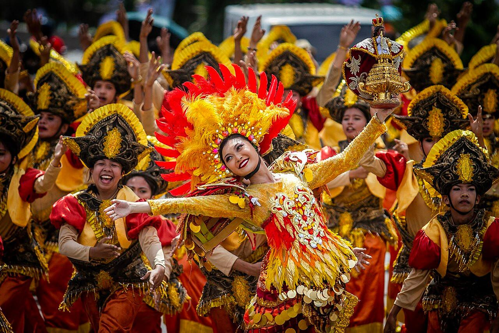
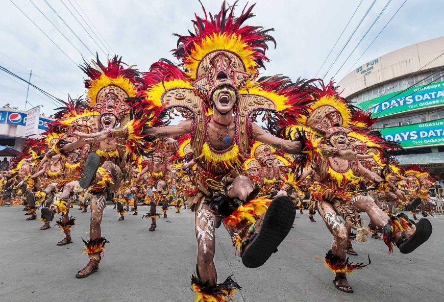
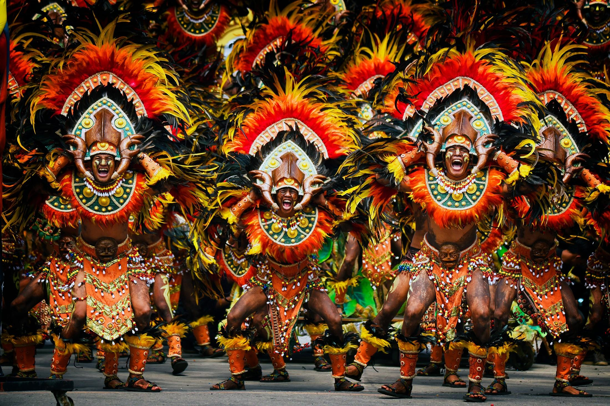

Festivals



The Visayas is famous for its lively festivals, which celebrate religious traditions, local history, thanksgiving, and cultural identity.
What Visayas is famous for:
- Sinulog Festival (Cebu City) - A grand celebration honoring the Santo Niño, featuring street dancing and colorful costumes.
- Ati-Atihan Festival (Kalibo, Aklan) - Known as the "Mother of All Philippine Festivals," featuring traditional dancing and face painting.
- Dinagyang Festival (Iloilo City) - A religious and cultural celebration honoring the Santo Niño through energetic street performances.
- MassKara Festival (Bacolod City) - Known for its colorful smiling masks, street dancing, and lively celebrations.
- Sandugo Festival (Bohol) - Celebrates the historic blood compact between Datu Sikatuna and Miguel López de Legazpi.
- Pintados-Kasadyaan Festival (Tacloban City) - Celebrates Leyte's cultural heritage through colorful costumes and traditional performances.